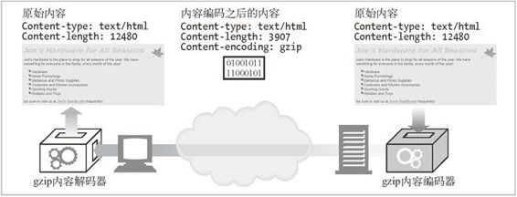
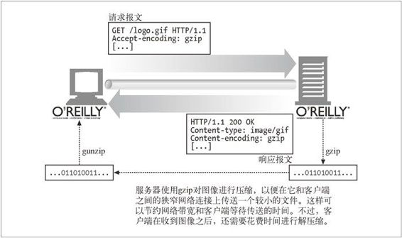

15.5 内容编码
HTTP 应用程序有时在发送之前需要对内容进行编码。例如，在把很大的 HTML 文档发送给通过慢速连接连上来的客户端之前 , 服务器可能会对它进行压缩，这样有助于减少传输实体的时间。服务器还可以把内容搅乱或加密，以此来防止未经授权的第三方看到文档的内容。
这种类型的编码是在发送方应用到内容之上的。当内容经过内容编码之后，编好码的数据就放在实体主体中，像往常一样发送给接收方。
15.5.1 内容编码过程
内容编码的过程如下所述。
网站服务器生成原始响应报文，其中有原始的 Content-Type 和 Content- Length 首部。
内容编码服务器（也可能就是原始的服务器或下行的代理）创建编码后的报文。编码后的报文有同样的 Content-Type 但 Content-Length 可能不同（比如主体被压缩了）。内容编码服务器在编码后的报文中增加 Content-Encoding 首部，这样接收的应用程序就可以进行解码了。
接收程序得到编码后的报文，进行解码，获得原始报文。
图 15-3 给出了内容编码的梗概示例。

图 15-3 内容编码示例
在这个例子中，通过 gzip 内容编码函数对 HTML 页面处理之后，得到一个更小的、压缩的主体。经过网络发送的是压缩的主体，并打上了 gzip 压缩的标志。接收的客户端使用 gzip 解码器对实体进行解压缩。
下面给出的响应片段是另一个编码响应的例子（一个压缩的图像）：
HTTP/1.1 200 OK
Date: Fri, 05 Nov 1999 22:35:15 GMT
Server: Apache/1.2.4
Content-Length: 6096
Content-Type: image/gif
Content-Encoding: gzip
[...]
注意，Content-Type 首部可以且还应当出现在报文中。它说明了实体的原始格式，一旦实体被解码，要显示的时候，可能还是需要该信息才行的。记住，Content-Length 首部现在代表的是编码之后的主体长度。
15.5.2 内容编码类型
HTTP 定义了一些标准的内容编码类型，并允许用扩展编码的形式增添更多的编码。由互联网号码分配机构（IANA）对各种编码进行标准化，它给每个内容编码算法分配了唯一的代号。Content-Encoding 首部就用这些标准化的代号来说明编码时使用的算法。
表 15-2 列出了一些常用的内容编码代号。
表15-2 内容编码代号
| Content-Encoding 值 | 描 述 |
|---|---|
| gzip | 表明实体采用 GNU zip 编码a |
| compress | 表明实体采用 Unix 的文件压缩程序 |
| deflate | 表明实体是用 zlib 的格式压缩的b |
| identity | 表明没有对实体进行编码。当没有 Content-Encoding 首部时，就默认为这种情况 |
a：RFC 1952 中说明了 gzip 编码。
b：RFC 1950 和 1951 中讲解了 zlib 格式和 deflate 压缩算法。
gzip、compress 以及 deflate 编码都是无损压缩算法，用于减少传输报文的大小，不会导致信息损失。这些算法中，gzip 通常是效率最高的，使用最为广泛。
15.5.3 Accept-Encoding 首部
毫无疑问，我们不希望服务器用客户端无法解码的方式来对内容进行编码。为了避免服务器使用客户端不支持的编码方式，客户端就把自己支持的内容编码方式列表放在请求的 Accept-Encoding 首部里发出去。如果 HTTP 请求中没有包含 Accept-Encoding 首部，服务器就可以假设客户端能够接受任何编码方式（等价于发送 Accept-Encoding: *）。
图 15-4 展示了 HTTP 事务中的 Accept-Encoding 首部。

图 15-4 展示了 HTTP 事务中的 Accept-Encoding 首部
Accept-Encoding 字段包含用逗号分隔的支持编码的列表，下面是一些例子：
Accept-Encoding: compress, gzip
Accept-Encoding:
Accept-Encoding: *
Accept-Encoding: compress;q=0.5, gzip;q=1.0
Accept-Encoding: gzip;q=1.0, identity; q=0.5, *;q=0
客户端可以给每种编码附带 Q（质量）值参数来说明编码的优先级。Q 值的范围从 0.0 到 1.0，0.0 说明客户端不想接受所说明的编码，1.0 则表明最希望使用的编码。“*”表示“任何其他方法”。决定在响应中回送什么内容给客户端是个更通用的过程，而选择使用何种内容编码则是此过程的一部分。第 17 章将详细讨论这个过程，以及 Content-Encoding 首部和 Accept-Encoding 首部。
identity 编码代号只能在 Accept-Encoding 首部中出现，客户端用它来说明相对于其他内容编码算法的优先级。